Accepted at COLM 2026
*Equal contribution
Query Time: Day 4, 10:50:35
Question: Outside of mealtimes, what was the last group activity we did in the projector room?
A. Presenting slides B. Learning dance C. Chatting D. Preparing food E. Watching movies
Query Time: Day 4, 13:27:25
Question: What other food have we eaten on this table before?
A. BBQ, pizza B. Hotpot, pizza, KFC C. Hotpot, pizza D. Pizza, KFC
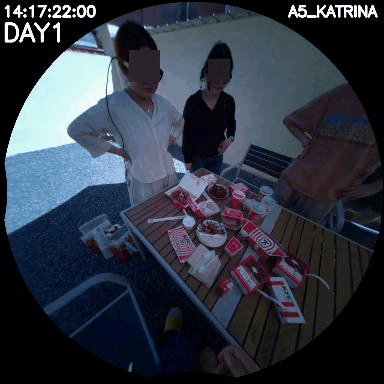
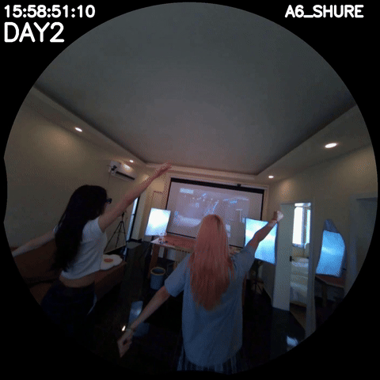
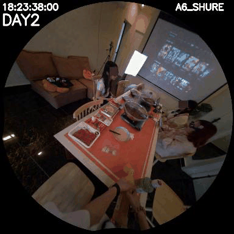
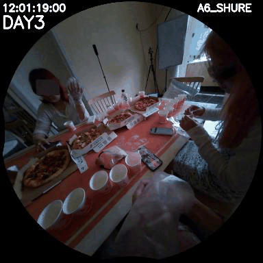
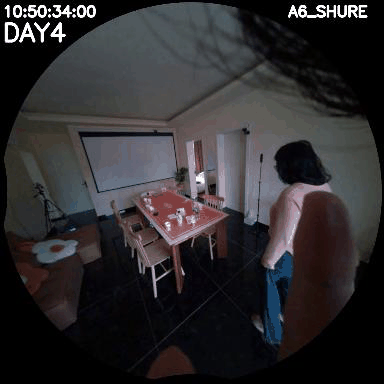
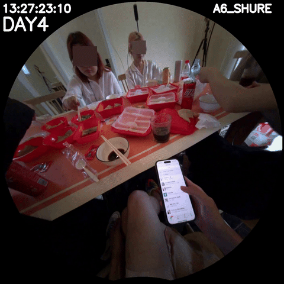
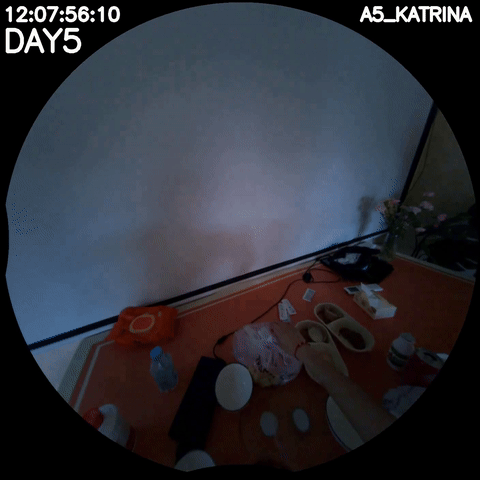
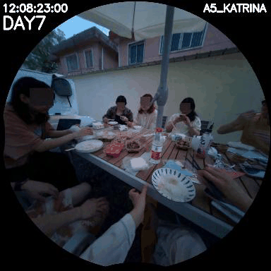
Query Time: Day 7, 13:00:00
Question: Where do we usually have meals together?
A. The table outside B. Gingham table C. The orange table D. My desk E. In restaurant
Figure 1: Illustration of EgoMemReason for week-long egocentric video memory. Given a query at a specific time, answering requires retrieving and aggregating evidence from multiple temporally distant observations across days. We categorize memory into three types: entity memory (tracking persistent objects and states), event memory (ordering and linking events), and behavior memory (inferring patterns). Together they support multi-type, long-range, multi-evidence reasoning.
annotations_public.jsonl
has been reshuffled. If you downloaded the benchmark
before 2026-07-13, please
re-download
it before your next evaluation run — letters A–J now map to different option
strings. Question text and the set of option strings per question are
unchanged, so previously reported aggregate scores from published models
remain valid; but any locally-stored letter-only predictions must be
remapped (or the model re-run) before being submitted to the leaderboard.
Next-generation visual assistants such as smart glasses, embodied agents, and always-on life-logging systems must reason over an entire day or more of continuous visual experience. In such ultra-long video settings, relevant information is sparsely distributed across hours or days, making memory a fundamental challenge: models must accumulate information over time, recall previously observed states, track temporal order, and abstract recurring patterns from past experience. However, existing week-long video benchmarks are still primarily designed for perception and recognition, such as locating a specific moment or summarizing global content, rather than reasoning that requires accumulating and integrating evidence across multiple days. To address this gap, we introduce EgoMemReason, a comprehensive benchmark that systematically evaluates week-long egocentric video understanding through the lens of memory-driven reasoning. EgoMemReason evaluates three complementary memory types: entity memory, tracking how object states evolve and change across days; event memory, recalling and ordering activities separated by hours or days; and behavior memory, abstracting recurring patterns from sparse, repeated observations over the whole week period. EgoMemReason comprises 500 questions across three memory types and six core challenges, with an average of 5.1 video segments of evidence per question and 25.9 hours of memory backtracking. We evaluate EgoMemReason on 17 methods across MLLMs and agentic frameworks, revealing that even the best model achieves only 39.6% overall accuracy. Further analysis shows that the three memory types fail for distinct reasons and that performance degrades as evidence spans longer temporal horizons, revealing that long-horizon memory remains far from solved. We believe EgoMemReason establishes a strong foundation for evaluating and advancing long-context, memory-aware multimodal systems.
EgoMemReason pushes both temporal certification (the time span one must search to locate all ground-truth evidence) and evidence per question well beyond prior week-long egocentric benchmarks.
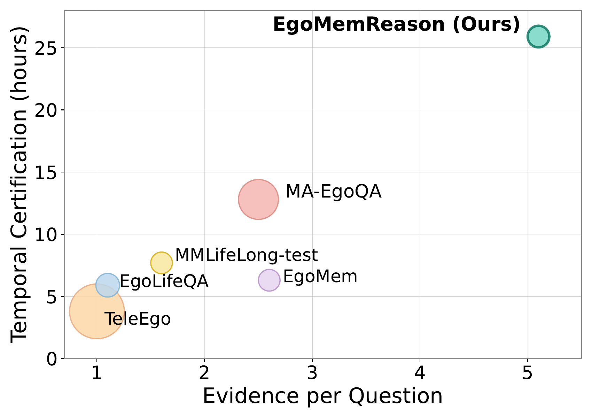
| Benchmark | Evidence/Q | Temporal Cert. (h) | Memory Types |
|---|---|---|---|
| TeleEgo | ~1 | ~5 | Single-moment |
| EgoLifeQA | ~1 | ~7 | Short-interval |
| MMLifelong-test | ~2 | ~8 | Retrieval-centric |
| EgoMem | ~2.5 | ~7 | Single-event |
| MA-EgoQA | ~3 | ~12 | Cross-event |
| EgoMemReason (Ours) | 5.1 | 25.9 | Entity / Event / Behavior |
Figure 2: Comparison with existing week-long video benchmarks. The x-axis shows the average number of distinct video segments needed to answer a question (evidence), and the y-axis shows temporal certification in hours (the total video duration one must search to locate all ground-truth evidence). Bubble size is proportional to the number of questions. EgoMemReason exceeds the strongest prior benchmark by 2× in evidence count and 2× in temporal certification.
We decompose week-long memory into three complementary types inspired by cognitive science, each operationalized into two tasks targeting distinct reasoning demands.
Re-identify entities across days as they appear, disappear, and resurface under different lighting, viewpoints, or locations.
Retrieve, temporally organize, and relate discrete events from a rich stream of activities that unfold across hours or days.
Distill higher-level priors from repeated observations — patterns that no single observation can reveal.
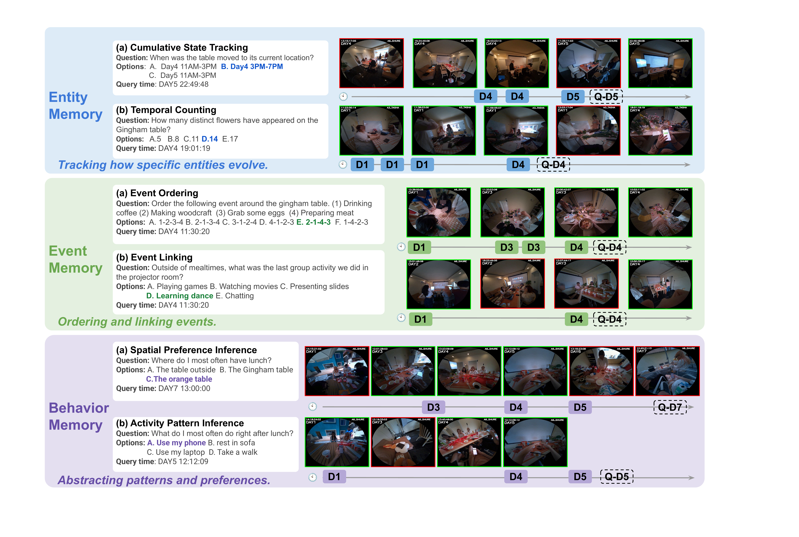
Figure 3: Overview of the six core challenges across three memory types in EgoMemReason. Within each example, the week-long timeline shows evidence frames sampled at different timestamps (e.g., D1, D2 denote days, and Q-D5 indicates the query timestamp on Day 5, highlighted by a dashed box). Green frames indicate relevant evidence and red frames indicate distracting observations.
EgoMemReason is built on the EgoLife dataset through a four-stage pipeline that ensures every question is temporally grounded, visually verified, and genuinely challenging. Only 15% of initial candidates survive the combined filtering and human verification stages.
Convert week-long video into structured evidence: clip-level object-centric captions plus hierarchical event summaries at three temporal granularities.
Task-specific generators for entity / event / behavior produce candidate multiple-choice questions, each constrained to a designated query timestamp.
Blind LLM tests reject text-leakage; we enforce visual grounding and a minimum 2-hour temporal gap across supporting evidence.
Six annotators review each surviving question (~20 min each), validating answers and iteratively refining distractors and visual grounding.
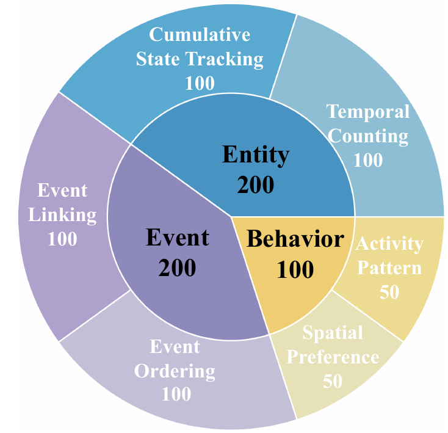
Figure 4: Dataset composition by memory type.
We evaluate 17 systems spanning general-purpose MLLMs, video-specific MLLMs, and agentic
video frameworks. The strongest model reaches only 39.6% overall — long-horizon memory is far from solved.
Submit your method to the public leaderboard:
huggingface.co/spaces/Ted412/EgoMemReason.
| Method | Entity Memory | Event Memory | Behavior Memory | Overall | |||
|---|---|---|---|---|---|---|---|
| Tracking | Counting | Ordering | Linking | Spatial | Activity | ||
| Random | |||||||
| Random | 19.6 | 16.7 | 11.1 | 17.3 | 19.3 | 19.2 | 16.8 |
| General MLLMs | |||||||
| InternVL3.5-8B | 23.0 | 29.0 | 23.0 | 27.0 | 34.0 | 42.0 | 28.0 |
| Qwen-3-VL-8B | 35.0 | 28.0 | 23.0 | 21.0 | 40.0 | 42.0 | 29.6 |
| InternVL3.5-38B | 33.0 | 40.0 | 27.0 | 24.0 | 46.0 | 32.0 | 32.6 |
| Qwen-3-VL-30B-A3B | 36.0 | 48.0 | 25.0 | 26.0 | 40.0 | 30.0 | 34.0 |
| Qwen-3-VL-32B | 35.0 | 46.0 | 27.0 | 27.0 | 50.0 | 46.0 | 36.8 |
| GPT-5 | 29.0 | 42.0 | 20.0 | 18.0 | 32.0 | 28.0 | 27.8 |
| Gemini-3-Flash | 46.0 | 28.0 | 36.0 | 44.0 | 44.0 | 44.0 | 39.6 |
| Gemini-3.1-Pro | 40.0 | 26.0 | 44.0 | 33.0 | 40.0 | 48.0 | 37.4 |
| Video-specific MLLMs | |||||||
| LongVA-7B | 22.0 | 18.0 | 20.0 | 20.0 | 20.0 | 22.0 | 20.6 |
| StreamingVLM | 25.0 | 29.0 | 21.0 | 20.0 | 20.0 | 32.0 | 24.2 |
| InternVideo2.5-8B | 29.0 | 27.0 | 25.0 | 15.0 | 32.0 | 32.0 | 25.6 |
| VideoLLaMA3-8B | 23.0 | 31.0 | 27.0 | 32.0 | 38.0 | 36.0 | 30.0 |
| Molmo2-8B | 36.0 | 50.0 | 27.0 | 25.0 | 34.0 | 22.0 | 33.2 |
| Agentic Video Frameworks | |||||||
| SiLVR | 31.0 | 14.0 | 27.0 | 17.0 | 18.0 | 28.0 | 22.4 |
| Ego-R1 | 30.0 | 18.0 | 23.0 | 18.0 | 48.0 | 32.0 | 25.8 |
| WorldMM | 32.0 | 44.0 | 21.0 | 21.0 | 34.0 | 36.0 | 30.6 |
| AVP | 34.0 | 42.0 | 31.0 | 27.0 | 38.0 | 34.0 | 34.0 |
Table 1: Main benchmark results on EgoMemReason. Accuracy (%) across three memory types and six capability dimensions: Tracking (Cumulative State Tracking), Counting (Temporal Counting), Ordering (Event Ordering), Linking (Event Linking), Spatial (Spatial Preference Inference), and Activity (Activity Pattern Inference). The best result in each column is bolded and the second best is underlined.
Try it yourself.
Run your model on the 500 public questions
(Ted412/EgoMemReason),
format predictions as
[{"example_id": 1, "predicted_answer": "A"}, ...],
and upload the file to the
Leaderboard Space
→ Score tab. You get per-split + Overall accuracy against the held-out
answer key immediately; nothing is stored, and nothing is posted publicly.
Want to be listed on the public leaderboard?
Every entry is personally verified. Email your
submission.json to
ziyangw@cs.unc.edu
with method + team name, model size, video-input modality,
a one-sentence description, and project/paper links. Turnaround: ~5 business days.
The three memory types fail for fundamentally different reasons, pointing to three orthogonal axes on which long-horizon video understanding must improve.
Models bottlenecked by perceptual precision combined with long-context retention. Text-centric models fall below 25% on Counting; pixel-grounded Molmo2-8B leads all 8B models on both Cumulative State Tracking and Temporal Counting.
Even the strongest models stay below 45% on both Ordering and Linking. Several video-specific MLLMs are near random on Ordering — locating one event is solvable, relating many is not.
Best models stay at 50.0% (Spatial) and 48.0% (Activity). Strong global summarization does not imply the ability to abstract recurring patterns across many sparsely distributed observations.
Overall accuracy decreases as the temporal span of required evidence grows — with sharply different decay patterns across memory types. Event memory shows the sharpest, most monotonic decline.
| Cert. Length (h) | <8 | 8–16 | 16–32 | 32+ | Total |
|---|---|---|---|---|---|
| Entity | 28.5 | 33.9 | 32.1 | 30.3 | 31.5 |
| Event | – | 31.1 | 23.0 | 13.5 | 22.0 |
| Behavioral | – | – | 43.7 | 37.0 | 41.0 |
| Overall | 40.3 | 33.7 | 32.5 | 23.2 | 29.6 |
Table 2: Effect of temporal certification length on accuracy (%) across memory types. Event memory shows the sharpest decline as the evidence span grows.
Captions and transcripts affect each memory type differently — no configuration meaningfully improves overall performance.
| Trans. | Caption | Entity | Event | Behavior | All |
|---|---|---|---|---|---|
| ✗ | ✗ | 31.5 | 22.0 | 41.0 | 29.6 |
| ✗ | ✓ | 29.0 | 23.0 | 46.0 | 30.0 |
| ✓ | ✗ | 29.5 | 21.0 | 45.0 | 29.2 |
| ✓ | ✓ | 31.5 | 19.0 | 45.0 | 29.2 |
Table 3: Effect of auxiliary text inputs (transcripts, captions) on accuracy (%). Behavior is the only type that benefits; Event is consistently hurt by captions.
Performance does not improve monotonically with more frames, and chain-of-thought prompting hurts substantially — indicating that the bottleneck lies in how models encode and retrieve long-horizon visual information rather than in input scale or reasoning strategy.
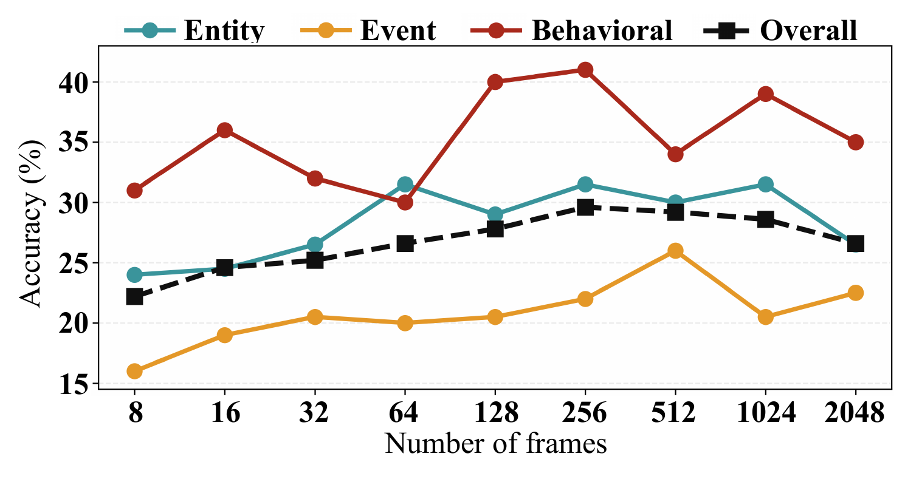
Figure 6: Effect of input frames. No single frame budget is optimal across memory types; event memory is least responsive to frame scaling.
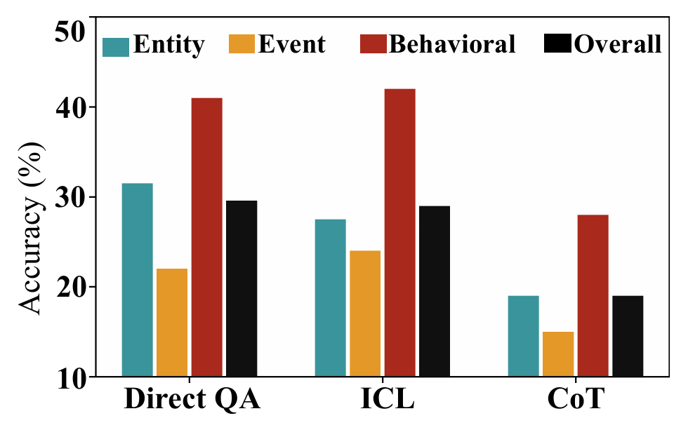
Figure 7: Effect of prompt strategies (Direct QA, ICL, CoT). CoT degrades performance across all memory types — explicit reasoning amplifies errors when the bottleneck is perception, not deliberation.
@misc{wang2026egomemreasonmemorydrivenreasoningbenchmark,
title={EgoMemReason: A Memory-Driven Reasoning Benchmark for Long-Horizon Egocentric Video Understanding},
author={Ziyang Wang and Yue Zhang and Shoubin Yu and Ce Zhang and Zengqi Zhao and Jaehong Yoon and Hyunji Lee and Gedas Bertasius and Mohit Bansal},
year={2026},
eprint={2605.09874},
archivePrefix={arXiv},
primaryClass={cs.CV},
url={https://arxiv.org/abs/2605.09874},
}